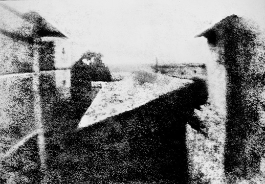
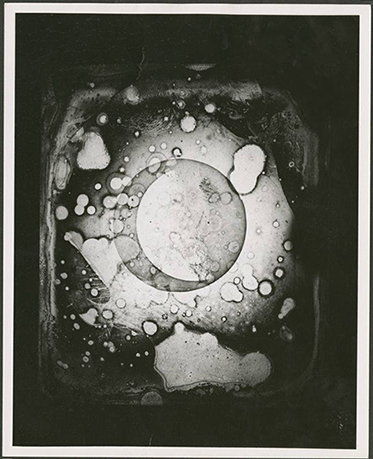

Fast forward about 2,200 years. It is around 1826 and we find ourselves back with Joseph Nicephore Niepce. He is looking out his window and he is about to make a photograph… well, a heliograph, to be exact.
This was around the time Niepce produced what is believed to be the oldest surviving photograph from a window of his estate located in Le Gras in the Burgundy region of France. What Mr. Niepce concocted was a small piece of polished pewter which he then coated with a solution of bitumen and lavender oil. Bitumen is a naturally occurring asphalt and is sometimes referred to as Bitumen of Judea. The most interesting property of bitumen is that it is light sensitive.
So, for what has been speculated from anywhere between eight hours to several days, the piece of polished pewter with bitumen emulsion remained in Joe’s camera obscura. What resulted was this:

Daguerre's Contribution
Shortly thereafter, Niepce partnered with a Parisian artist named Louis Daguerre and began further investigations and refinements into Niepce’s process. Sadly, Niepce passed away in 1833 but luckily left his notes entirely to Daguerre who continued working. Louis favored a silver-based processes and used plates with silver coatings which were exposed to iodine fumes. The iodine reacted with the silver and produced a coating of photosensitive silver iodide on the plates.
The major innovation of Daguerre’s process was the discovery that by applying mercury fumes to the exposed silver plate he could actually make the “latent” image visible on the plate thus reducing the lengthy exposure times of previous methods. Now, exposures could be measured in minutes instead of days. Daguerre’s method of silver iodide emulsed plates developed with mercury vapor was called… you guessed it… the Daguerreotype. These instructions were then published as a free gift to the world on August 19th, 1839.
